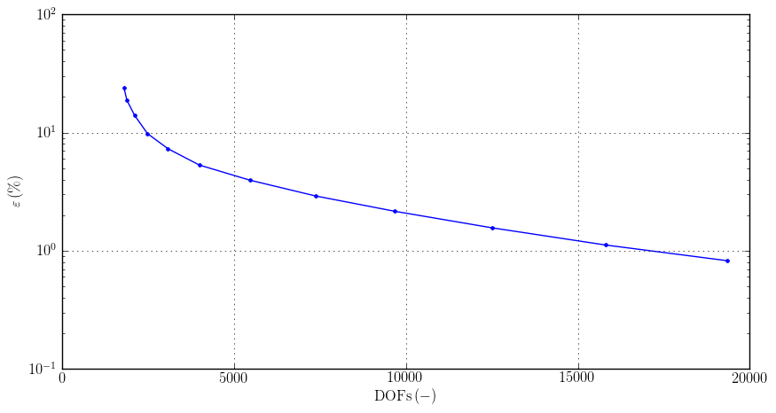
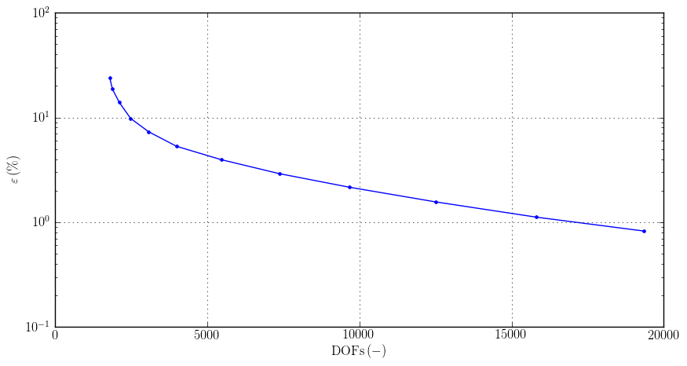

About Agros2D¶
Agros2D is a multiplatform C++ application for the solution of partial differential equations (PDE) based on the Hermes library, developed by the hpfem.org group at the University of West Bohemia in Pilsen. Agros2D is distributed under the GNU General Public License.
Supported Physical Fields:
- Electrostatic fields
- Electric current fields
- Magnetic fields (steady state, harmonic and transient analysis)
- High frequency electromagnetic fields – in development
- Temperature fields (steady state and transient analysis)
- Acoustic field (harmonic and transient analysis)
- Linear thermo-elasticity
- Incompressible flow (steady state and transient analysis) – in development
Key Features¶
- hp-FEM
The hp-FEM (higher-order finite element method) is a modern version of the finite element method whitch combines finite elements of variable size (h) and polynomial degree (p) in order to obtain fast exponential convergence.
- Adaptivity

 

Fig.: Adaptivity charts
- Curvilinear elements


Fig: Curvilinear (left) and edge (right) elements at the same geometry

{kind=link}